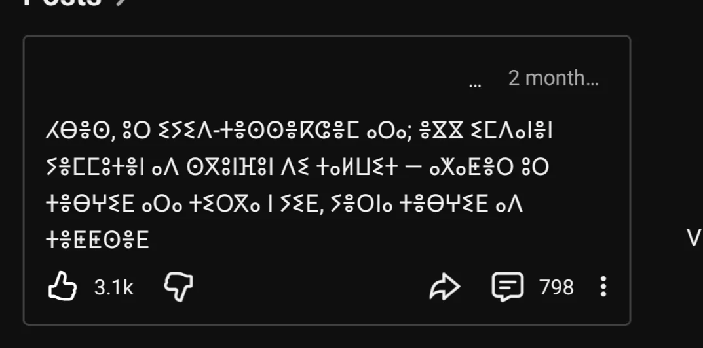

A Tifinagh post on a blank-titled YouTube channel
Source: “Hello everyone, I found an account with this kind…”, r/codes, posted by u/Emotional-Point-4093. The post is on the YouTube channel @Soul09-t4e (Posts tab).
CLAIM CONFIRMED It is a language, not a code. The script is Tifinagh (the modern Neo-Tifinagh alphabet), and the language is Kabyle (Taqbaylit), a Tamazight (Berber) language of northern Algeria.
“Stop, don’t bring me in; let the dead rest in peace, because you don’t want nightmares, and you want to be able to sleep.”
Ḥbes, ur iyi-d-tessekcem ara; eǧǧ imdanen yemmuten ad sgunfun di talwit — axaṭer ur tebɣiḍ ara tirga n yiḍ, yerna tebɣiḍ ad teṭṭseḍ.
The claim being checked (a reply in the thread): “This is no code, this is the Tifinagh alphabet, the messages are probably in a Tamazight language.”
Every part of the claim holds. The one thing to add is which Tamazight language: the text is Kabyle. It uses Kabyle’s two-part negation ur … ara and Kabyle words such as axaṭer ‘because’ and yerna ‘and also’. It is spelled letter for letter in standard Kabyle Latin spelling, written with Tifinagh letters (see why Kabyle).
The post

Raw text, as stored by YouTube
This text was fetched from the channel’s Posts tab on 2026-11-26 (post id UgkxTeSd9kcxxBFQjfeyy4TpR7akBGtbUPyZ, listed as “3 months ago”). It is real Unicode text, not an image. It uses 24 different letters, all from the Unicode Tifinagh block (U+2D30–U+2D7F), plus ordinary punctuation: a comma, a hyphen, a semicolon and an em dash. My transcription from the screenshot alone, made before the fetch, matched it character for character.
Reading, word by word
Transliteration (standard Kabyle Latin spelling)
This is a direct letter-for-letter conversion. The only differences from textbook spelling are the missing hyphen in iyid- (normally iyi-d-) and the missing final full stop. I added the full stop here.
Translation
Literal: “Stop, do not bring me in; leave the people who have died to rest in peace, because you do not want dreams of the night, and besides, you want to sleep.”
Natural: “Stop. Don’t bring me into this. Let the dead rest in peace, because you don’t want nightmares, and you’d like to be able to sleep.”
Gloss
| Tifinagh | Latin | Meaning | Notes |
|---|---|---|---|
| ⵃⴱⴻⵙ | ḥbes | stop! | imperative of ḥbes ‘stop, halt’ |
| ⵓⵔ | ur | not | ur: first half of the negation ur … ara |
| ⵉⵢⵉⴷ-ⵜⴻⵙⵙⴻⴽⵛⴻⵎ | iyid-tessekcem | bring me in | iyi ‘me’ + d ‘toward here’ + tessekcem, from sekcem ‘make enter’ (causative of kcem ‘enter’) |
| ⴰⵔⴰ | ara | (not) | ara: second half of the negation |
| ⴻⴵⴵ | eǧǧ | leave, let | imperative of eǧǧ ‘leave, let be’ |
| ⵉⵎⴷⴰⵏⴻⵏ | imdanen | people | plural of amdan ‘human being’ |
| ⵢⴻⵎⵎⵓⵜⴻⵏ | yemmuten | who died | participle of mmet ‘die’ (cf. yemmut ‘he died’) |
| ⴰⴷ | ad | (will / so that) | particle before the aorist |
| ⵙⴳⵓⵏⴼⵓⵏ | sgunfun | they rest | sgunfu ‘rest’, 3rd person plural |
| ⴷⵉ | di | in | preposition |
| ⵜⴰⵍⵡⵉⵜ | talwit | peace | talwit |
| ⴰⵅⴰⵟⴻⵔ | axaṭer | because | axaṭer |
| ⵓⵔ | ur | not | ur … ara again |
| ⵜⴻⴱⵖⵉⴹ | tebɣiḍ | you want | bɣu ‘want’, 2nd person singular t-…-ḍ |
| ⴰⵔⴰ | ara | (not) | |
| ⵜⵉⵔⴳⴰ | tirga | dreams | plural of targit ‘dream’ |
| ⵏ | n | of | genitive particle |
| ⵢⵉⴹ | yiḍ | night | iḍ ‘night’ (form yiḍ after n) |
| ⵢⴻⵔⵏⴰ | yerna | and also | yerna ‘moreover, and besides’ |
| ⵜⴻⴱⵖⵉⴹ | tebɣiḍ | you want | |
| ⴰⴷ | ad | to | |
| ⵜⴻⵟⵟⵙⴻⴹ | teṭṭseḍ | you sleep | eṭṭes ‘sleep’, 2nd person singular aorist |
- ur iyi-d-tessekcem ara is clearly “not … bring/let me in (toward here)”. But the verb form is a little odd for a command. A native prohibition would normally be built on the bare intensive form (as in ur ttru ara ‘don’t cry’). As written, tessekcem looks like “she brought in”, or a “you” form missing its final -ḍ. That may point to a learner or a machine translation, but the intended sense is clear: “don’t drag me in / don’t let me in”.
- tirga n yiḍ is literally “dreams of the night”. In context (“you don’t want …, and you want to sleep”) it means bad dreams, i.e. nightmares.
Letter key
These are the 24 Tifinagh letters in the post, with their Unicode names and the Kabyle Latin letter each one stands for. Each Tifinagh letter maps to exactly one Latin letter. There are 103 letters in total.
| Glyph | Code point | Unicode name | Latin | Sound | Count | |
|---|---|---|---|---|---|---|
| ⴻ | U+2D3B | YEY | e | schwa (short ‘uh’) | 14 | |
| ⴰ | U+2D30 | YA | a | 12 | ||
| ⵉ | U+2D49 | YI | i | 9 | ||
| ⵜ | U+2D5C | YAT | t | 8 | ||
| ⵏ | U+2D4F | YAN | n | 7 | ||
| ⵔ | U+2D54 | YAR | r | 7 | ||
| ⴷ | U+2D37 | YAD | d | 5 | ||
| ⵓ | U+2D53 | YU | u | 5 | ||
| ⵙ | U+2D59 | YAS | s | 5 | ||
| ⴹ | U+2D39 | YADD | ḍ | emphatic d | 4 | |
| ⵎ | U+2D4E | YAM | m | 4 | ||
| ⵢ | U+2D62 | YAY | y | 4 | ||
| ⴱ | U+2D31 | YAB | b | 3 | ||
| ⵟ | U+2D5F | YATT | ṭ | emphatic t | 3 | |
| ⴳ | U+2D33 | YAG | g | 2 | ||
| ⴵ | U+2D35 | BERBER ACADEMY YAJ | ǧ | j as in jam | 2 | |
| ⵖ | U+2D56 | YAGH | ɣ | gh (French r) | 2 | |
| ⴼ | U+2D3C | YAF | f | 1 | ||
| ⴽ | U+2D3D | YAK | k | 1 | ||
| ⵃ | U+2D43 | YAHH | ḥ | pharyngeal h | 1 | |
| ⵅ | U+2D45 | YAKH | x | kh as in Bach | 1 | |
| ⵍ | U+2D4D | YAL | l | 1 | ||
| ⵛ | U+2D5B | YASH | c | sh | 1 | |
| ⵡ | U+2D61 | YAW | w | 1 |
Why this is not a cipher
- The characters are real script, not invented symbols. The text is stored as standard Unicode Tifinagh code points. That is what a Tifinagh keyboard layout produces.
- No key is needed. Read with each letter’s standard sound value, all 22 words are ordinary Kabyle words. They form a grammatical sentence, and the punctuation (comma, semicolon, dash, comma) falls exactly at the clause breaks. A cipher would not turn into fluent text under the script’s own published sound values.
- The letter counts look like Kabyle. The most common letter is ⴻ e (schwa, 14/103). Next come ⴰ a (12), ⵉ i (9), ⵜ t (8), ⵏ n (7), ⵔ r (7). Kabyle writing is full of schwas and of t from feminine and verb prefixes.
Why Kabyle in particular
- The negation ur … ara wraps the verb twice (ur iyid-tessekcem ara, ur tebɣiḍ ara tirga). This two-part negation is the standard Kabyle pattern, e.g. Ur urareɣ ara ‘I did not play’ (Kabyle grammar). The pre-verbal ur is common to Berber, but the word after the verb varies by language, and ara is the Kabyle one. Other varieties use ur alone or a different second word such as ša (Ouali 2003).
- The vocabulary is Kabyle: axaṭer ‘because’, yerna ‘and also’, ḥbes ‘stop’, eǧǧ ‘leave’ (compare Eǧǧ-iyi! ‘Leave me alone!’ in Kabyle phrasebooks), sgunfu ‘rest’, imdanen ‘people’, eṭṭes ‘sleep’.
- The spelling is Kabyle Latin spelling, carried over letter for letter. The schwa is written (ⴻ for e), doubled consonants are written double (ⵙⵙ, ⵎⵎ, ⵟⵟ, ⴵⴵ), and clitics are joined to the verb with a hyphen (ⵉⵢⵉⴷ-ⵜⴻⵙⵙⴻⴽⵛⴻⵎ iyid-tessekcem; standard spelling hyphenates once more, iyi-d-tessekcem). This is how Kabyle is usually written in Latin letters. Here it has simply been typed with a Tifinagh keyboard.
- ⴵ for ǧ. Unicode names this letter
TIFINAGH LETTER BERBER ACADEMY YAJ(U+2D35). It comes from the Berber Academy (Agraw Imazighen), the Kabyle-led group that popularised Neo-Tifinagh from the late 1960s.
Context on the channel
- The channel’s name, its description and all 11 video titles fetched on 2026-11-26 consist only of invisible filler characters (U+3164 HANGUL FILLER and U+2800 BRAILLE PATTERN BLANK). So the Tifinagh post is the only readable text on the channel page.
- The message fits the channel’s eerie found-footage style. It is a warning, apparently in the voice of the dead, to stop digging and leave them alone.
- Only this one post appeared in the first page of the Posts tab, so any older posts on the channel were not checked. If other posts are also in Tifinagh, the same letter key above should read them.
Files: images/post.png, images/channel.png (screenshots from the thread); work/post_text.txt (raw post text); work/build_index.py (builds this page and checks that the gloss reproduces the raw text exactly).